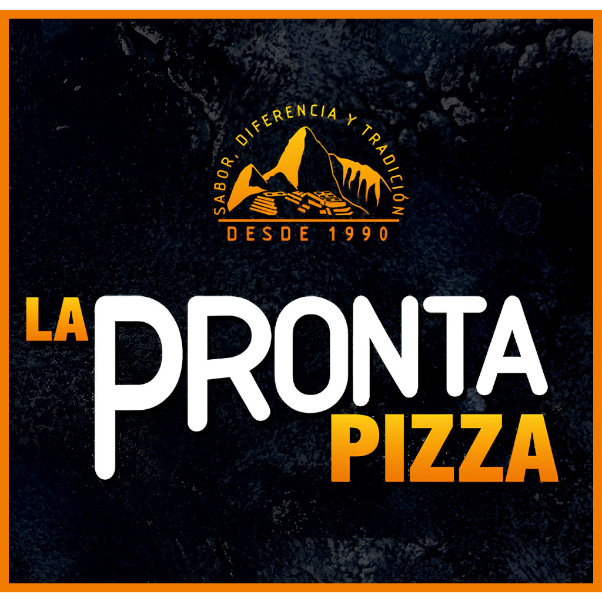

Nombre completo del ponente
Tema Por confirmar
El perfil profesional y los detalles de la ponencia se publicarán próximamente.
El punto de encuentro donde la tecnología, las ideas y el talento universitario construyen lo que sigue.
La experiencia CATEC
Dos jornadas para escuchar, experimentar y encontrarte con personas que también quieren crear lo que sigue.
Ponentes · 16 de septiembre
El evento
CATEC es un evento académico y tecnológico impulsado por estudiantes de la Escuela Profesional de Ingeniería de Sistemas de la Universidad Privada de Tacna. Una experiencia para aprender, compartir y acercarnos a las tecnologías que están transformando nuestra profesión.
Experiencias, herramientas y perspectivas que conectan la teoría con retos reales.
Especialistas y profesionales dispuestos a compartir el camino detrás de su trabajo.
Un espacio para encontrarnos, hacer preguntas y crear nuevas conexiones.
Antecedentes
Actividades y ediciones que reunieron a la comunidad alrededor del conocimiento, la programación y las nuevas tecnologías.
Del 01 al 05 de junio
Competencia, lógica y talento universitario
Una identidad que crece con cada encuentro
Información oficial
La modalidad, el lugar y las inscripciones se publicarán aquí apenas queden confirmados. Así evitamos difundir información provisional o incorrecta.
Agenda
Publicaremos cada sesión con su horario, tema, ponente y modalidad. El contenido estará disponible en texto para facilitar su consulta y aparición en buscadores.
Avísenme cuando esté disponiblePonentes
Conoce el orden de participación para el 16 de septiembre. Los nombres, temas y horarios definitivos se actualizarán cuando queden confirmados.
Fecha del evento 16 de septiembre
Horario referencial
Tema: Por confirmar
La descripción profesional y experiencia del ponente se publicarán próximamente.
Tema: Por confirmar
La descripción profesional y experiencia del ponente se publicarán próximamente.
Tema: Por confirmar
La descripción profesional y experiencia del ponente se publicarán próximamente.
Tema: Por confirmar
La descripción profesional y experiencia del ponente se publicarán próximamente.
Tema: Por confirmar
La descripción profesional y experiencia del ponente se publicarán próximamente.
Para ti
Una jornada abierta para aprender, compartir ideas y conectar con personas que también quieren construir el futuro desde la tecnología.
Conecta lo aprendido en el aula con experiencias y retos del mundo real.
Comparte perspectivas y descubre nuevas formas de aplicar la tecnología.
Encuentra ideas, referentes y conexiones para impulsar nuevos proyectos.
Acércate a la tecnología desde un espacio abierto, cercano y colaborativo.
Patrocinadores
Organizaciones que se suman para hacer posible una experiencia de aprendizaje, tecnología y comunidad.
 La Trilogía del Sabor
La Trilogía del Sabor
 Nutrifit
Nutrifit

La Pronta Pizza Líder Chicken
Líder Chicken
 Zheros Express
Zheros Express
 Jimena Velásquez Beauty Studio
Jimena Velásquez Beauty Studio
Preguntas
Actualizaremos estas respuestas conforme se confirme la información oficial.
Es un evento académico de capacitación tecnológica organizado por estudiantes de Ingeniería de Sistemas de la Universidad Privada de Tacna.
CATEC 2026-II se realizará el 15 y 16 de septiembre: el Programming Contest será el día 15 y la jornada de ponencias, el día 16.
Habilitaremos aquí el enlace oficial de inscripción. No solicitaremos registros desde enlaces que no hayan sido publicados en este sitio o en las redes oficiales.
CATEC está dirigido a estudiantes, profesionales y personas interesadas en tecnología, innovación y emprendimiento.